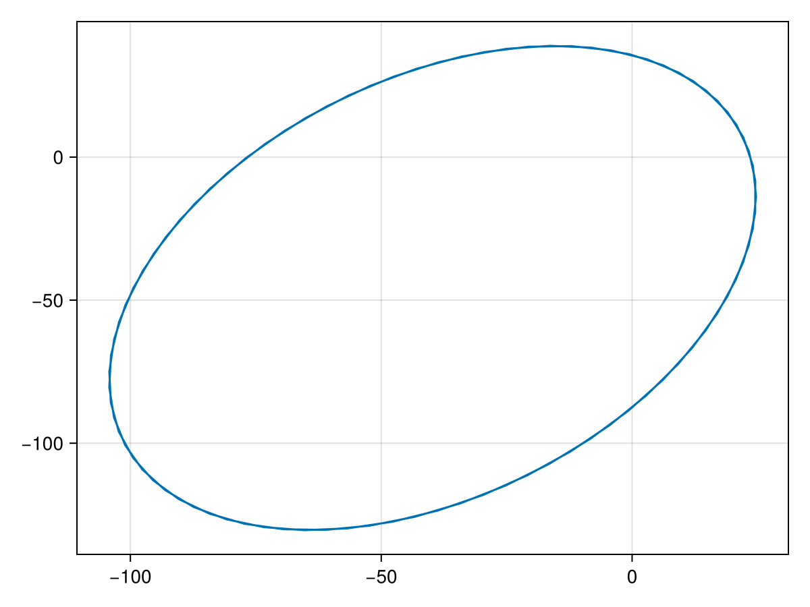
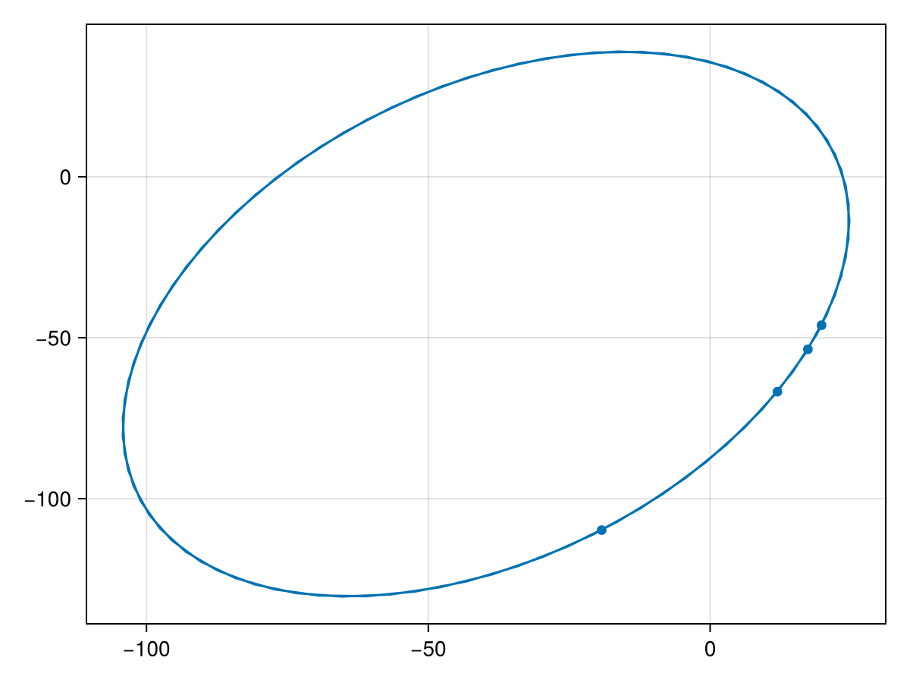
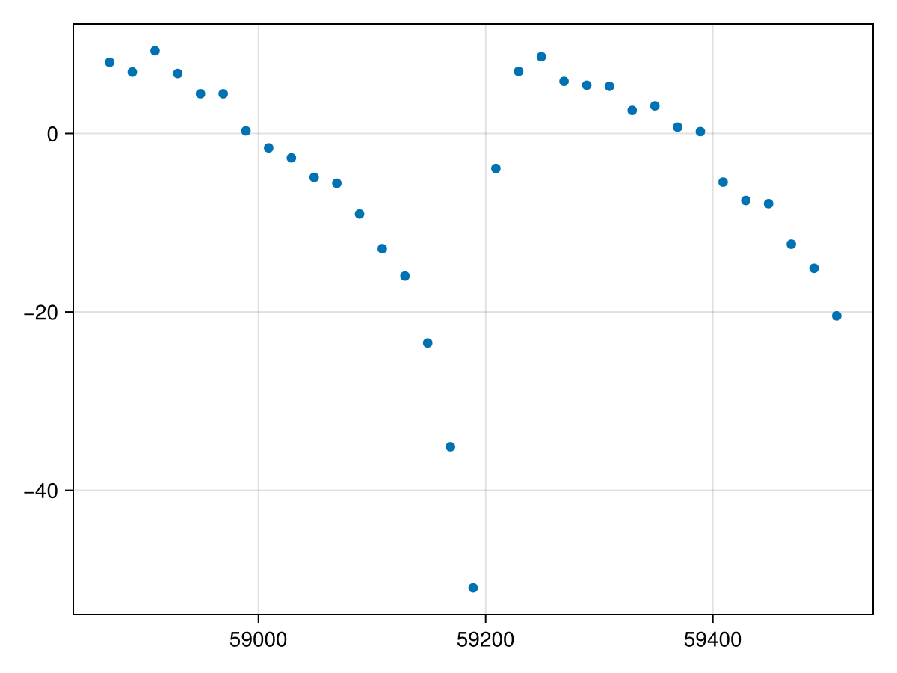
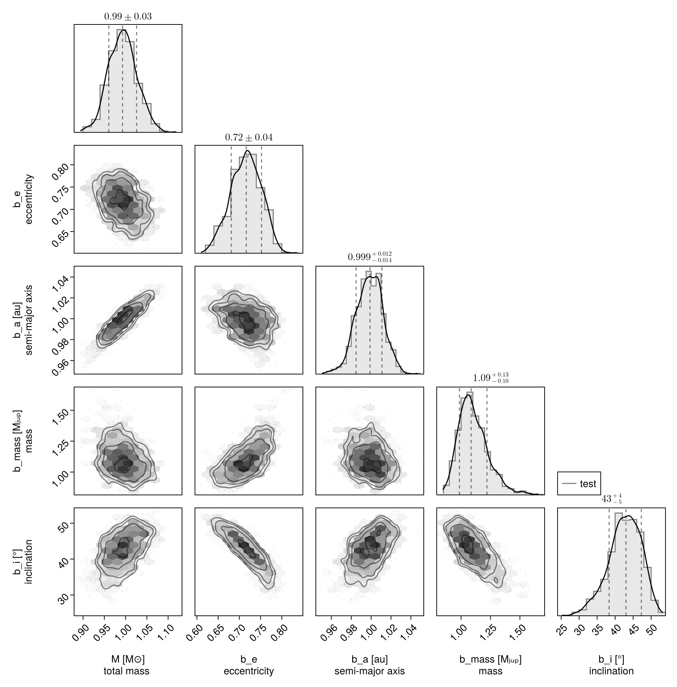
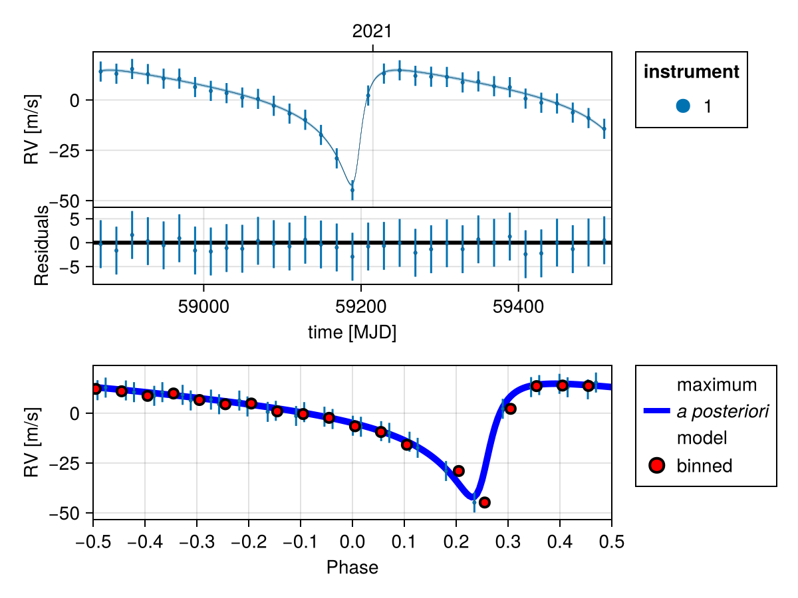
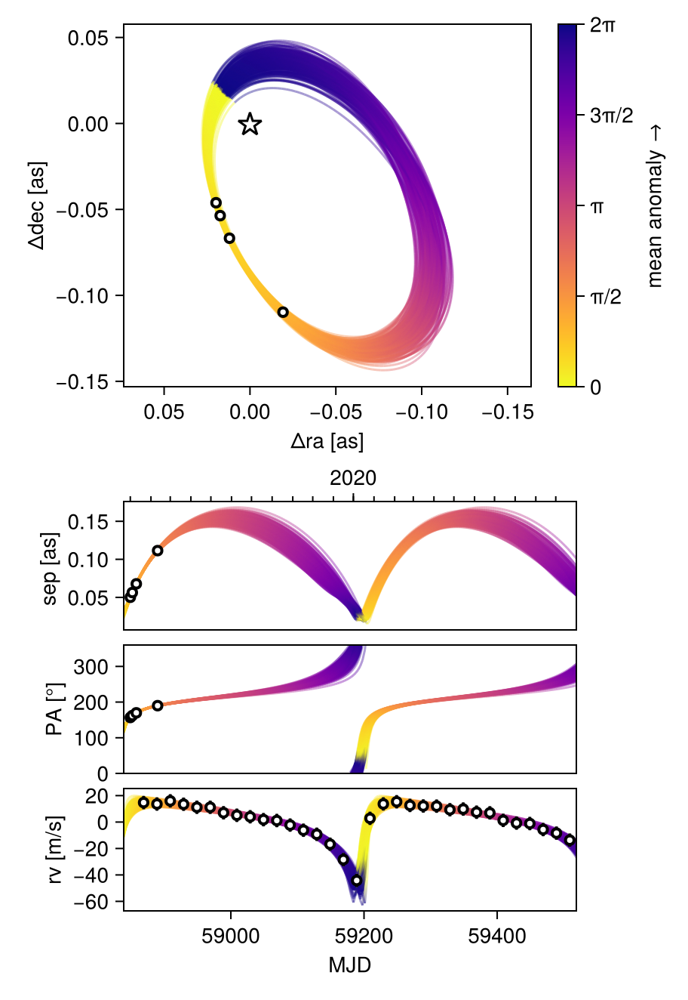

Fit Radial Velocity and Astrometry
You can use Octofitter to jointly fit relative astrometry data and radial velocity data. Below is an example. For more information on these functions, see previous guides.
Import required packages
using Octofitter
using OctofitterRadialVelocity
using CairoMakie
using PairPlots
using Distributions
using PlanetOrbitsWe now use PlanetOrbits.jl to create sample data. We start with a template orbit and record it's positon and velocity at a few epochs.
orb_template = orbit(
a = 1.0,
e = 0.7,
i= pi/4,
Ω = 0.1,
ω = 1π/4,
M = 1.0,
plx=100.0,
m =0,
tp =58829
)
Makie.lines(orb_template)
Sample position and store as relative astrometry measurements:
epochs = [58849,58852,58858,58890]
astrom = PlanetRelAstromLikelihood(Table(
epoch=epochs,
ra=raoff.(orb_template, epochs),
dec=decoff.(orb_template, epochs),
σ_ra=fill(1.0, size(epochs)),
σ_dec=fill(1.0, size(epochs)),
))PlanetRelAstromLikelihood Table with 5 columns and 4 rows:
epoch ra dec σ_ra σ_dec
┌───────────────────────────────────────
1 │ 58849 19.7702 -46.1239 1.0 1.0
2 │ 58852 17.3456 -53.619 1.0 1.0
3 │ 58858 11.9381 -66.7613 1.0 1.0
4 │ 58890 -19.2446 -109.772 1.0 1.0And plot our simulated astrometry measurments:
fig = Makie.lines(orb_template,)
Makie.scatter!(astrom.table.ra, astrom.table.dec)
fig
Generate a simulated RV curve from the same orbit:
using Random
Random.seed!(1)
epochs = 58849 .+ (20:20:660)
planet_sim_mass = 0.001 # solar masses here
rvlike = StarAbsoluteRVLikelihood(Table(
epoch=epochs,
rv=radvel.(orb_template, epochs, planet_sim_mass) .+ randn.() .+ 100randn(),
σ_rv=fill(5.0, size(epochs)),
))
Makie.scatter(rvlike.table.epoch[:], rvlike.table.rv[:])
Now specify model and fit it:
@planet b Visual{KepOrbit} begin
e ~ Uniform(0,0.999999)
a ~ truncated(Normal(1, 1),lower=0)
mass ~ truncated(Normal(1, 1), lower=0)
i ~ Sine()
Ω ~ UniformCircular()
ω ~ UniformCircular()
θ ~ UniformCircular()
tp = θ_at_epoch_to_tperi(system,b,58849.0) # reference epoch for θ. Choose an MJD date near your data.
end astrom
@system test begin
M ~ truncated(Normal(1, 0.04),lower=0) # (Baines & Armstrong 2011).
plx = 100.0
jitter ~ truncated(Normal(0,10),lower=0)
rv0 ~ Normal(0,10)
end rvlike b
model = Octofitter.LogDensityModel(test; autodiff=:ForwardDiff,verbosity=4)
using Random
rng = Xoshiro(0) # seed the random number generator for reproducible results
results = octofit(rng, model)Chains MCMC chain (1000×31×1 Array{Float64, 3}):
Iterations = 1:1:1000
Number of chains = 1
Samples per chain = 1000
Wall duration = 2.32 seconds
Compute duration = 2.32 seconds
parameters = M, jitter, rv0, plx, b_e, b_a, b_mass, b_i, b_Ωy, b_Ωx, b_ωy, b_ωx, b_θy, b_θx, b_Ω, b_ω, b_θ, b_tp
internals = n_steps, is_accept, acceptance_rate, hamiltonian_energy, hamiltonian_energy_error, max_hamiltonian_energy_error, tree_depth, numerical_error, step_size, nom_step_size, is_adapt, loglike, logpost, tree_depth, numerical_error
Summary Statistics
parameters mean std mcse ess_bulk ess_tail rhat ⋯
Symbol Float64 Float64 Float64 Float64 Float64 Float64 ⋯
M 0.9934 0.0332 0.0012 798.0657 610.2216 1.0027 ⋯
jitter 0.7581 0.5877 0.0189 637.0084 474.2031 0.9995 ⋯
rv0 -6.7391 0.9734 0.0320 922.3635 653.7758 1.0006 ⋯
plx 100.0000 0.0000 NaN NaN NaN NaN ⋯
b_e 0.7156 0.0355 0.0017 418.4354 525.5739 1.0008 ⋯
b_a 0.9983 0.0134 0.0006 589.6539 436.8325 1.0032 ⋯
b_mass 1.1058 0.1271 0.0058 570.9573 494.9522 0.9992 ⋯
b_i 0.7446 0.0791 0.0040 415.7745 409.9462 1.0000 ⋯
b_Ωy 0.9975 0.0944 0.0033 854.5952 728.0025 1.0021 ⋯
b_Ωx 0.0769 0.0855 0.0042 420.2534 594.0936 1.0014 ⋯
b_ωy 0.7048 0.0914 0.0037 620.0421 664.5589 1.0034 ⋯
b_ωx 0.7069 0.0954 0.0034 767.9018 758.5481 1.0019 ⋯
b_θy -0.9185 0.0879 0.0024 1335.2795 677.9046 0.9994 ⋯
b_θx 0.3950 0.0397 0.0012 1196.7961 767.3903 0.9993 ⋯
b_Ω 0.0765 0.0846 0.0040 460.5372 594.0936 1.0008 ⋯
b_ω 0.7866 0.0886 0.0039 544.5648 590.5646 1.0033 ⋯
b_θ 2.7355 0.0114 0.0003 1168.3538 701.1969 0.9993 ⋯
b_tp 58829.4923 1.7302 0.0809 450.2941 668.0540 0.9994 ⋯
1 column omitted
Quantiles
parameters 2.5% 25.0% 50.0% 75.0% 97.5%
Symbol Float64 Float64 Float64 Float64 Float64
M 0.9299 0.9700 0.9929 1.0151 1.0594
jitter 0.0319 0.2849 0.6228 1.1022 2.0925
rv0 -8.6393 -7.4205 -6.7460 -6.0799 -4.7989
plx 100.0000 100.0000 100.0000 100.0000 100.0000
b_e 0.6448 0.6906 0.7162 0.7411 0.7787
b_a 0.9715 0.9897 0.9989 1.0075 1.0236
b_mass 0.9088 1.0156 1.0853 1.1795 1.4108
b_i 0.5703 0.6969 0.7506 0.8035 0.8797
b_Ωy 0.8242 0.9328 0.9904 1.0592 1.2002
b_Ωx -0.0928 0.0207 0.0804 0.1359 0.2397
b_ωy 0.5399 0.6415 0.7008 0.7651 0.8958
b_ωx 0.5337 0.6397 0.7033 0.7699 0.9023
b_θy -1.0906 -0.9776 -0.9176 -0.8586 -0.7540
b_θx 0.3218 0.3670 0.3938 0.4213 0.4740
b_Ω -0.0958 0.0204 0.0816 0.1368 0.2236
b_ω 0.6041 0.7288 0.7910 0.8520 0.9435
b_θ 2.7127 2.7274 2.7355 2.7429 2.7572
b_tp 58826.0070 58828.4055 58829.6504 58830.8059 58832.4614
Display results as a corner plot:
octocorner(model, results, small=true)
Plot RV curve, phase folded curve, and binned residuals:
OctofitterRadialVelocity.rvpostplot(model, results,)
Display RV, PMA, astrometry, relative separation, position angle, and 3D projected views:
octoplot(model, results)